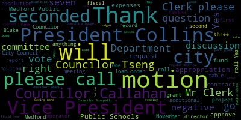
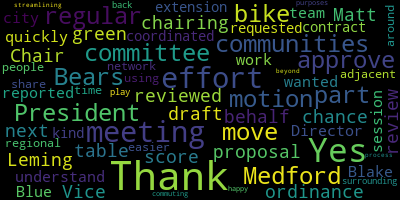
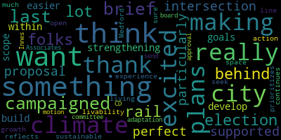
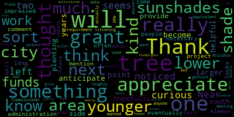
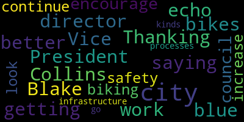

[Bears]: Shane you good. Medford City Council 22nd regular meeting November 24, 2024 is called the order. Mr. Clerk, please call the roll. Councilor Callahan. Vice President Collins.
[Hurtubise]: Council Lazzaro, Councilor Lemming, Councilor Scarpelli, Councilor Sang, President Behrs.
[Bears]: Present, seven present, none absent, please rise to salute the flag. As a reminder, all votes will be roll call tonight because we have Vice President Collins on Zoom. Announcements, accolades, remembrances, reports and records. 24496 offered by Vice President Collins and Councilor Scarpelli. This is a resolution to congratulate the Bedford High School varsity rowing team. They requested that they be taken later in the meeting. Is there a motion to table? On the motion to table by Councilor Sang, seconded by Councilor Callahan. Mr. Clerk, please call the roll.
[Hurtubise]: Councilor Callahan? Vice President Collins?
[Collins]: Yes.
[Bears]: Yes, seven in the affirmative, none in the negative. The motion is tabled. Records, the records of the meeting of November 12th, 2024 were passed to Vice President Collins. Vice President Collins, how did you find the records?
[Collins]: I would move to table to the next regular meeting. On the motion. I didn't have a chance to review them.
[Bears]: Seconded by Councilor Singh. Mr. Clerk, please call the roll. to the next meeting. Yes.
[Hurtubise]: Yes, I mean from the negative records of a meeting of November records of the meeting of November 12 2024 are tabled.
[Bears]: Reports of committees 2 4 0 3 3 offered by Vice President Collins planning and permitting committee November 13 2024 report to follow Vice President Collins.
[Collins]: Thank you, President bears and I'd also like to thank Vice Chair of the committee Matt lemming for chairing this meeting on my behalf at this meeting. The draft proposal for the green score ordinance was reviewed by the committee and reported out to a regular session. Thank you. I move to approve.
[Bears]: Thank you on the motion to approve the committee report by Vice President Collins, seconded by Councilor Lemming. Mr. Clerk, please call the roll.
[Hurtubise]: Councilor Callahan? Vice President Collins?
[Bears]: Yes.
[Hurtubise]: Councilor Lazzaro? Yes. Councilor Lemming? Yes. Councilor Scarpelli? Yes. Councilor Singh? Yes. President Behrs?
[Bears]: Yes. Having the affirmative, none in the negative, the committee report is approved. Motions, orders, and resolutions. 24499 offered by Vice President Collins and President Behrs. This is the aforementioned amendment to the zoning ordinance for the Green Score for referral to the Community Development Board. The purpose of the Green Score is to provide flexibility in meeting environmental performance standards, promote attractive environmentally functional landscapes, strengthen climate adaptive goals established in the Climate Action and Adaptation Plan released in 2022 by improving flood resilience, heat mitigation, storm infiltration, and water, air, and soil quality, And to offer a many free ecosystem services, including mitigation of pollution shade and energy savings recreational opportunities and enhance property values and quality of life. As this was discussed in planning and permitting committee right now, this will only apply if approved to the Mystic Avenue Corridor District, which is currently under consideration by the Community Development Board. And as further zoning amendments move through, the green score would be added. But also right now applies to, I'm sorry, construction of new principal buildings or major renovations in FEMA flood hazard layer zones or projects that require site plan review. Any further discussion? Councilor Sang.
[Tseng]: I'll be brief. This is something that I campaigned on in the last election, something that I think a lot of other folks here behind the rail supported. I am particularly excited about this proposal because I think this is the perfect intersection between strengthening our climate goals and making it easier to develop and build here in the city within a scope of livability. I think this really prioritizes the experience of living here and making sure that our growth as it continues really reflects the city that we want to be, the sustainable Medford that we seek to be. It's very much in line with our open space plans, with our climate action and adaptation plans, and just something I'm very excited for. So I want to thank the committee. I want to thank Innis Associates. and I would motion for approval or to send this to the CD board.
[Bears]: On the motion of councilor saying to refer to community development board seconded by councilor Callahan. Any further discussion? Seeing none, Mr. Clerk, please call the roll.
[Hurtubise]: Councilor Callahan? Vice President Collins?
[Collins]: Yes.
[Hurtubise]: Councilor Lozano? second. President bears.
[Bears]: Yes, 70 affirmative. None of the negative. The motion passes and the zoning amendment is referred to the Community Development Board. Communications from the mayor 24494 submitted by Mayor Brianna Lugo Kern Riverside Plaza P. A. R. C. Grant loan order and C. P. C. Appropriation approval request. Dear President bears and members of the City Council. I'm excited to share that the city has been awarded $198,853 for the Parkland Acquisitions and Renovations for Communities Park Grant for the Riverside Plaza Improvements Project. The City's Community Preservation Committee is also recommending an appropriation of CPA funds in the amount of $144,250 for a total project cost of $343,103. The park grant requires that the City Council pass a resolution accepting the grant and acknowledging the restrictions to this space slash project for providing recreation purposes. The grant also requires that full funding for the projects be appropriated upon acceptance of the grant. The enclosed resolution addresses these requirements. The grant will then reimburse a $198,853 portion of the appropriation. In summary, I respectfully request and recommend that your honorable body adopt the enclosed resolution to accept the grant and authorize a loan order request of $198,853 for the project, which will be reimbursed by the park grant. Park grant requires a copy of certified vote sent to them by December 31st. and I hope these requests have been submitted with sufficient time for review. Sincerely, Brianna Lungokern, Mayor. So we have the resolution language here. We do have a letter from KP Law indicating that the loan order is prepared and loan order is authorized and in the correct form, properly granting the treasurer with the approval of the mayor. the authority to issue the bonds for the city. And that has been reviewed by Bond Council. And we also have here a letter from the Community Preservation Committee requesting that we requesting and recommending that we approve the CPC appropriation. And I believe we have Amanda Centrella here as well as Teresa DuPont. So I will let Amanda present anything else that you'd like to present.
[Centrella]: you. Thank you, President bears. Um, I have a brief presentation available if counselors are interested in seeing it just to illustrate what this project is about. But I also respect want to respect your time.
[Bears]: So if you're interested, sure, we'll take a quick presentation.
[Centrella]: Great.
[Bears]: Um, I think we need to make you a co host. Yes, please. Thank you. One second.
[Centrella]: Great. So I'm Amanda Centrella. I work with the Office of Planning, Development and Sustainability. Thank you so much for having me. And I want to talk briefly about Riverside Plaza. So just a summary about this project. We think that this plaza is a beautiful space. It was renovated in, I believe, 2018. And something that we've observed over the past year and a half is that while it is used very heavily during the shoulder seasons of the year, In the summer, it gets too hot to use comfortably for large chunks of the day because there isn't much shade over the actual patio of the plaza. There are some adjacent mature trees on lawn that's next to the plaza. Kind of over here. And oftentimes, folks will understandably drag tables and chairs underneath there to make use of that shade during the day. And it is really lovely. I've done the same. But as you can see, let's look at. this picture, there isn't an accessible route to this shaded area. And the lawn that's there isn't really lawn anymore because it's heavily trafficked. So there isn't an accessible way to use this shaded space. So this project proposes to put a floating deck over that portion of the lawn, which will accomplish a couple of things. It creates an accessible route to that shaded space, And it protects the tree roots and the root systems there in soil from erosion. So the deck would allow for water to infiltrate, creates an accessible route, and just keeps things kind of looking nice over there as well. In addition, sorry, I keep skipping around. In addition, we are proposing to put a couple of shade sails in the patio area of the plaza to make that gorgeous space more usable during the hottest part of the year and sunny days. See, so just a little bit of a close up on where those are located in that patio existing patio area and here's a rendering to kind of get a better picture. We wouldn't you know encapsulate the entire patio space, because it is nice to have sunny spaces as well, but just creating some areas for shade. And in this picture, you can see roughly where we're talking about for the decking area. There is the sidewalk here and an existing pathway that runs up to this area where there's like a little stage. And then from there, an accessible ramp that goes up at a gradual slope to this decked area. And you can see there's some space around each of the existing trees there. And here's a rendering of, you know, in concept what that deck could look like. A couple of other things that this project includes would be a water bottle, a water filling station. As part of our climate action and adaptation plan, one of the priorities there is to have, create more hubs where there's cool spaces in public spaces, and water is an important feature of that. have a little bit of additional lighting in the style of the, um, existing, uh, lights that are there. And just a quick breakdown of the funding. So we applied for this park grant, which is a through a state program through the executive Office of Environmental Affairs, and we were awarded and roughly $199,000 Um, we have been before the Community Preservation Committee, and Teresa will talk a little bit more about that. But for that required match funding for a total of around $343,000 for this project. So that's just a rough overview, and I would welcome questions.
[Bears]: Thank you. Do we have questions for Amanda, or do we want to hear from Teresa first? Teresa, is there anything you'd like to add?
[DuPont]: I was just going to add that this was a project that has been bantered about in our outreach with residents. A lot of residents have commented wanting to see this type of improvement at the site. So the CPC unanimously and heartily supported this project. Just wanted to add that for some color.
[Bears]: Thank you. All right. We'll go to Councilor Callahan and then Councilor Scarpelli.
[Callahan]: Thank you. So I noticed that there are some younger trees. So the two areas where there will be sunshades, the left one and then the lower one. Near the lower one, it seems like there are some younger trees. And I'm just curious if you anticipate that at the point where those trees become larger, that this is sort of something for the next 10 years that these sunshades will be really helpful and that hopefully those trees will then provide more shade there.
[Centrella]: Absolutely. So those trees are about 20 years out from being able to provide basically maturing to their full size and being able to provide shade to that area and augmenting shade over there. So you're absolutely right. these shade cells are acting as sort of an interim tool for creating some shade. Awesome. Is that the same on the left? I don't really see a younger tree there, but... I think the younger trees are kind of on this area where there's some picnic tables over there, and not so much on this right hand side. Yeah.
[Callahan]: Any thoughts of like planting a tree in the south side so that eventually it will shade that area as well if that's something that we think is necessary long-term? I know it's not in this project, but I just thought I would mention it.
[Centrella]: No, it's a great suggestion. There are some plantings over here and landscaping over here that are existing, but it's absolutely something we could explore. And I think, let's see, I think we have some shade studies here. I didn't. I don't think so. So these are conceptual drawings. At this point, we haven't done final design. Final design will be incorporated once we have access to this funding. And so we could look at, you know, what are some options to extend the beauty and also tree canopy of the space.
[Bears]: Thank you. Go to Councilor Scarpelli.
[Scarpelli]: Thank you, Council President. Thank you for the presentation. I think this is such a welcoming addition. I think that especially when you hear some of the bantering of the negativity of the pop-up park and the parking lot where there's no shade, there's nothing that really attracts families to that area in the concept that we're seeing here. So I think this really fills a gap in Medford Square. I think this is something I'll support 1,000%. The question I had is I know that we've had residents that made that the chess hub of the world, it seemed, right? So I know one resident worked very hard I know that the tables there, the chest tables and those coverings going to be able to shade those areas.
[Centrella]: Let's see. Yeah, so there are a lot of mobile tables that are in and around this plaza area. And these are just, as I mentioned, these are just conceptual design. So we could ensure that any of the permanent tables there with the chess board on top of them could be covered.
[Scarpelli]: If I can, if you can, just if you can reach out to the resident, I'll share his information. I'm sure you know it. Yeah. But if you can just, you know, even maybe get him involved in saying, okay, as you kind of built this area and really made it when people didn't know what it was going to be used for, he kind of made it a home for families and kids that really needed an area to meet. So I think that it was, it was a great vision and great opportunity for us. So I appreciate all your hard work and I I think this is going to be great. So thank you.
[Centrella]: Thank you.
[Callahan]: Just one other comment that I really appreciate how much, I'm always impressed with how much our city administration looks for grants. And just so that people know, grants often come with this kind of requirement where there's the grant, but then they also require the city to put in funds that are sort of roughly equivalent. So I really appreciate the work on that front.
[Bears]: Thank you. All right, anything else you'd like to add? Great. So we're going to take two votes here. First, we need to take a vote on the loan order and the resolution to accept the grant. That means three readings, and then we can vote on the community preservation committee appropriation request. So is there a motion on the loan order to approve for first reading? On the motion of councilor saying to approve for first reading, seconded by Councilor Lazzaro. Mr. Clerk. Please call the roll.
[Hurtubise]: I also accept the grant, correct?
[Bears]: Yes. Councilor Kellyanne?
[Hurtubise]: Vice President Collins?
[Collins]: Yes.
[Hurtubise]: Councilor Lozano? Yes. Councilor Lemming? Yes. Councilor Scarpelli? Yes. Councilor Sang? Yes. President Behrs?
[Bears]: Yes. Seven in the affirmative, none in the negative. The loan order and acceptance of the park grant passes for first reading. On the CPC appropriation request? On the motion of councillors are to approve seconded by Councillor saying, Mr. Please call the roll.
[Hurtubise]: Council Callahan. Vice President Collins.
[Nazarian]: Yes.
[Hurtubise]: Councilor Lazzaro, Councilor Lemming, Councilor Scarpelli.
[Bears]: Councilor saying, President bears. Yes, seven affirmative no negative emotion. Thank you. All right. 24497 submitted my bear brain on go current ballot question seven and eight override supplemental appropriations for the fiscal year 2025 Medford public schools operating budget and the Department of Public Works. Dear President bears and members of the city council in accordance with the vote of the city of Medford approving question seven and eight on November 5 2024 state election ballot. I respectfully request and recommend that your honorable body approves the following additional appropriations to the fiscal year 2025 men for public schools operating budget, and the Department of Public Works. and further rescind the city council's June 11th, 2024 vote to appropriate a one-time fund advance of ARPA funds that was provided to avoid severe budget cuts in the fiscal 25 MPS operating budget in the event that the override questions did not pass. These ARPA funds will now instead be used for items outlined in the city's capital improvement plan, such as, but not limited to, the purchase of a fire engine for the fire department and two hybrid police cruisers for the police department. for supplemental appropriation to below DPW and close as a comprehensive budget breakdown as with any budget is subject to adjustments. The city will provide a breakdown of funds spent on the DPW and through my role as chair of the school committee, I will work with my school committee colleagues and the MPS administration to ensure detailed reporting for all override funds expended by the Medford public schools as well. Supplemental Appropriation One, Medford Public Schools. It is hereby ordered that the city of Medford raise by taxation and appropriate the additional sum of $3 million to supplement the fiscal year 2025 Medford Public Schools operating budget for the purposes stated in question seven on the November 5th, 2024 state election ballot. Cost of teachers, literacy coaches, behavior specialists, administrative assistants and nurses positions and regular facilities maintenance. department Medford public schools fiscal 25 appropriation 3 million and further rescind the city council's june 11 2024 vote appropriating the sum of 1.75 million in american rescue plan act funds as a one-time advance for the fiscal 25 mps budget sorry there just a second Supplemental appropriation to Department of Public Works is hereby ordered that the city of Medford raised by taxation and appropriate additional sum of 500,000 for the Department of Public Works consistent with the vote under question seven on the November 5 2024 state election ballot for additional staff for road and sidewalk infrastructure repair related insurance expenses and related capital expenses. All is set forth in the chart below. Department DPW highway salaries FY 25 appropriations $270,192.64. DPW highway expenses fiscal 25 $67,195.36. Related insurance expenses fiscal 25 $102,612. Related capital expenses including for example trucks to be used by additional staff $60,000 total $500,000. Supplemental appropriation three, Medford Public Schools. It is hereby ordered that the city of Medford raised by taxation and appropriate the additional sum of four million to supplement the fiscal year 2025 Medford Public Schools operating budget for the purposes stated in question eight on the November 5th, 2024 state election ballot to create a high school schedule that increases access to arts and vocational programming to expand classroom instructional opportunities and for classroom and teacher paraprofessional compensation for the fiscal year beginning July 1, 2024 And to effectuate and further the will of the voters of the city of Medford as evidenced by their approval of question eight, the school committee per its procedures and prior to expenditure of the funds appropriated here under shall determine in detail the specific anticipated operational costs and expenses to provide the reference programming. Department Medford Public Schools, fiscal 25, $4 million, total $4 million. Thank you for your kind attention to this matter. Sincerely, Brianna Longo Kern, Mayor. And also we have included here a budget breakdown for road and sidewalk infrastructure repair outlining three new positions in the Department of Public Works, a PW14 Mason working foreman, PW8 maintenance craftsman and laborer, PW8 maintenance craftsman laborer, overtime estimated at $23,000 per employee, stipends for OSHA 1030 clothing and CPR, ordinary expenses, parts and supplies, unleaded gas, repair supplies, asphalt, concrete, manholes, et cetera, totaling $67,195 and additional capital expenses, 60,000, as well as health insurance at 99,000 for the three employees and dental and vision at 3,400 for a total of 500,000 for the DPW. With that, I will go to the chief of staff, if there's anything that you would like to add to the presentation, and then we can go to questions by councilors.
[Nazarian]: Thank you very much, President Behrs. Members of the City Council, I don't really have anything further to add, but I'm here and happy to answer any questions that I can for this evening.
[Bears]: Thank you. I will also offer Commissioner McGivern if there's anything you want to add.
[McGivern]: Hello everybody, President Bears. I don't really have much to add. The letter is pretty comprehensive. Again, I'm here for questions and I'm excited for this moment. So thank you. Councilor Sang.
[Bears]: On the motion to approve by Councilor Sang, seconded by Councilor Callahan. Further discussion, I'll go to Councilor Callahan.
[Callahan]: Thank you. I just wanted to note for anyone listening that Commissioner McGibbon will be at the next public works meeting in order to give us an update on how these funds be used, what we can kind of expect from this new funding to the DPW.
[Bears]: Thank you. Any further discussion on this matter? Seeing none on the motion of Councillor saying seconded by Councillor Callahan, Mr. Clerk, please call the roll.
[Hurtubise]: Councillor Callahan. Vice President Collins. Yes. Councillor Lazzaro. Yes. Councillor Lemming.
[SPEAKER_05]: Yes.
[Hurtubise]: Councillor Scarpelli.
[SPEAKER_05]: Yes.
[Bears]: Councillor Seng. Yes. President Behrs. Yes. I have an affirmative and a negative. The motion passes. Communications from city officers and employees 24495 submitted by director of traffic and transportation Todd Blake authorization of future blue bikes contract exceeding three years to Medford City Council from Todd Blake director of traffic and transportation. Sorry, authorization of future blue bikes contract exceeding three years This memorandum summarizes the request to authorize a future contract as required by section 12 of chapter 30 be the general laws, the city's contract with lift the operator blue blue bikes will expire in fall 2025. The Metropolitan Area Planning Council intends to issue a request for proposals on behalf of all the municipalities that are part of the Blue Bike system to select a new operator in 2025. MAPC will select one operator to manage the entire system to ensure that it continues to operate regionally. Each municipality will then have the opportunity to contract with the selected operator separately or enter into a joint contract. It is the intention of Blue Bikes municipalities to enter into a five-year contract with two two-year options to renew with the future operator. entering into a longer-term contract will encourage the future operator to provide a higher level of service to users and help secure more funding through the system's title sponsorship, which will then allow the service to continue growing throughout the region. And I'm not gonna read the rest if folks don't mind me reading the legalese on chapter 30B. All right. I think we're good. I'm gonna go to director Todd Blake.
[Blake]: As some others have mentioned, I'm just here for questions. I think the memo is self-explanatory.
[Bears]: Thank you, Todd. I will go to Vice President Collins.
[Collins]: Thank you, President Behrs. I just wanted to quickly thank Director Blake and his team for their work with Blue Bikes here to for in the city. And I understand that this requested contract extension is part of a kind of coordinated regional effort so that not just an effort, but that in more of our adjacent communities, people can have an easier time. the bike share network and using that not only to get in and around Medford, but to surrounding communities and back for play and for commuting and for other purposes. So I'm happy to be a part of the effort of streamlining that process in Medford and beyond, and I would motion to approve. Thank you.
[Bears]: Thank you. And just FYI, we're having some audio issues with your audio, Vice President Collins. Todd sounded fine, right? Yeah, might be on your end, Vice President Collins. Vice President Collins has motion to approve. Is there any, is there a second? Second by Councilor Sang. Is there any further discussion? Seeing none, Councilor Lazzaro.
[Lazzaro]: I would like to echo what Vice President Collins was saying about Thanking director Blake for his work on this. I, the more blue bikes we are getting into the city, the better. I just would encourage this council to continue to look at how we can increase the safety of biking infrastructure in the city as we, as we go into these kinds of processes.
[Bears]: Thank you. Thank you. Director Blake, is there anything you want to share relative to bike safety infrastructure as related to blue bikes or otherwise?
[Blake]: Yeah, thank you. I appreciate the kind words. Yeah, we've successfully expanded the system from three stations just two years ago to now 15. And as a region, we just broke a record with the most rides ever with over 4 million rides this past year, this current year, I mean, 2024. So we're trying to keep up with adding bicycle infrastructure as you could probably see from some recent efforts just this past week or two on College Ave, Salem Street and Main Street. So we're trying to continue our efforts to make safe connections from major points of interest like the Green Line and Medford Square and other points of interest like that. So hopefully we could keep pace with the expansion of the blue bikes and continue to provide additional bicycle infrastructure. Thanks.
[Bears]: Thank you, Director Blake. Any further discussion? Seeing none, on the motion of Vice President Collins, seconded by Councilor Sang, is that right? Mr. Clerk, please call the roll.
[Hurtubise]: Councilor Callahan? Yes. Vice President Collins? Yes. Councilor Lozaro? Councilor Lemming? Councilor Seng? Yes. President Behrs?
[Bears]: Yes. Having the affirmative and the negative, the motion passes. The last things that we had, we have a public participation item from Andrew Castagnetti. And thank you, Director Blake. And we did have the tabled item regarding the crew team. I'm thinking maybe we should just table both of them to the next regular meeting. Yeah. Crew team's already tabled. All right, crew team's tabled, so we'll put that back on the next regular meeting agenda. And then is there a motion to table Mr. Castaneda's public participation item for the next regular meeting? On the motion to table the public participation item from the gentleman from East Med Ford by Councilor Scarpelli, seconded by Councilor Lemming. Mr. Clerk, please call the roll.
[Hurtubise]: Councilor Kellyanne. Vice President Collins.
[Collins]: Yes.
[Hurtubise]: Councilor Lazaro. Yes. Councilor Lemming. Yes. Councilor Scarpelli. Yes. Councilor Sang. Yes. President Behrs.
[Bears]: Yes. Seven in favor of the negative, the motion is tabled. Any further discussion? All in If you would like to participate in public, please raise your hand on Zoom or in person. Is he walking up?
[Hurtubise]: I thought he just walked past.
[Bears]: Andy, we just tabled your item. We're almost done. Do you want to speak tonight? You're a little late. We'll take you. Motion to take the paper off the table from Mr. Cassidy by Councilor lemming seconded by Councilor Callahan. One second Mr. Clerk please call the roll. We just need to, we have to vote to bring it back. Councilor Callahan, we're in a roll call. Yes.
[Hurtubise]: Vice President Collins. Yes. Councilor Lozaro. Yes. Councilor Lemmon. Yes. Councilor Scarpelli. Councilor Seng. President Beers. Yes.
[Bears]: I mean, if everyone's done the negative, the motion passes. Mr. Cassidy, name and address for the record.
[Castagnetti]: Take your time, but the quicker you do it, the better it is. That's what's important. Anyways, he must've knew me. Thank you, Council President. Andrew Castanetti, Cushing Street, Medford, Massachusetts. My request to the city council, I brought this up a few months ago with $100 cash, but you become a scared, you told me to put the cash away. So I brought a check this time. I got the guy got rid of this licorice. You don't want to smell my cigarettes. Please see my check, my donation for $100, check number 742. I want this to go forward to light up the Karatek Bridge, the Mystic River footbridge over the Mystic River in memory of Lawrence Larry Lepore. He is well loved by many with this 37 year city employment history. This historic footbridge is the best existential landmark in Medford, Massachusetts. And it would be really cool to see the lights shimmering on a river year round. I'm hoping this beautification will be done before the holidays. Thank you for listening, Andrew P. Castanete. P.S. I've enclosed a photo of the Mystic River footbridge taken by your mom, Mr. President, Mrs. Beers. I met her at the West Bedford Open Studio. She had a booth. And it's a beautiful photograph. I'm keeping the original, but it's part of the copy I'm gonna give you along with the check. Also, please submit my request and check to the Mayor, City Mayor, Mayor Brianna. And if you have any questions or comments, I do appreciate it, because I walked the bridge a few times, I checked out the two, electric poles on both ends of the bridge. They're within spitting distance. They're like four or five feet away from both sides of the bridge. So I think it would look really cool. And if I wanted to use some Boston vernacular, it would look pisser. Thank you for correcting me. So if you have any questions or comments, I appreciate it. I seem to know a lot about this. So do you have any questions or comments?
[Bears]: Thank you. Do we have any questions? Councilor Scarpelli.
[Scarpelli]: But I know, you know, this is such a great gesture. It's exactly your heart. And we appreciate that because you know what it does. I don't think we'll ever forget Larry, but just a little symbol to keep Larry's light alive. I think this is a great fitting tribute. So thank you for that idea. And I think that if there is something that if we need to make sure that happens and look for some other alternative funding, I think that we as a council should try to find some other avenues to make sure that that happens. I think that'd be a great gesture.
[Castagnetti]: I really appreciate that council. Thank you. Cause it would really look wicked nice. And year round, it won't be the Longfellow Bridge or the Salt and Pepper Bridge as they call it, but man, looking from the Karatek Bridge towards that lit up, shimmering river, it would be wonderful. I wanted to push the envelope and confuse matters worse. The Karatek Bridge was built in 1634, I believe. It was recently rebuilt before Carol's went out of business. And I was told, you can see the year as you're going out of the square over the bridge and through the woods, that was the bridge, I'm sure. Not the footbridge, but it's all granite. I'm sure it's been redone that bridge at least five times. I believe it was a footbridge at first and it was a drawbridge and it was a toll bridge. So we made the Beacon Hill people pay the toll in order to go to the fells. Very interesting. So someone told me it's the first bridge in the USA. I started thinking, wait a minute, USA was 1776. This is 1634. So it must be the first bridge in 13 colonies. So I'm presuming it might be the first bridge in all of North America.
[Bears]: It was definitely the first bridge over the Mystic.
[Castagnetti]: And, you know, this, I mean, I don't wanna push the envelope. I'm trying to get these heavy duty, well-built Christmas lights. They shouldn't cost more than $100. And what can they afford more than paying for six packages of cigarettes? That's 16.50 a wack. So the point is, this is not rocket science. It's very doable. And there'll be thousands of people that would appreciate this.
[Bears]: So, thank you.
[Castagnetti]: I think it's appropriate that I leave the check with my letter that I hope you forward to the mayor as a council president you meet with him frequently, and it's appropriate that I leave it on the same messages desk.
[Bears]: Thank you. Yes, I appreciate the gesture to Larry. We miss him every day, and we will figure out how to do it I just appreciate you bringing it in the form of a check and not cash. So that that helps.
[Castagnetti]: I have to save my cash for the real estate tax bills now. Thank you for listening. Thank you.
[Bears]: just when I thought I was out. I'm gonna go to Councilor Callahan who has requested the microphone. Councilor Callahan.
[Callahan]: Thank you. I so appreciate this, the thought, the gesture. I actually went on Amazon and found some solar floodlights that are like either white or multicolored that cost around a hundred bucks. So I think this is something that we could easily make happen pretty quickly. Thank you.
[Bears]: All right. Any further discussion? Any further participation in the public participation section of the meeting? I'm going to go to Zoom. We have Eunice Brown on Zoom. Eunice, name and address for the record, please.
[Brown]: Hi, Eunice Brown, Greenleaf Ave. Just a quick question. I noticed on the calendar tomorrow when I emailed a couple of times about this and didn't get a reply, but there's a regular city council meeting at seven tomorrow night with the agenda item from the mayor, the appropriations from the override. Is that still being held and how is that different from what you guys just did a few minutes ago? And second quick question, have you guys received yet from the mayor the work from the charter commission, the charter that we wrote and the report?
[Bears]: Hi Eunice. On the second question we have not yet received the report from the Charter Commission I think it's expected towards the end of the month or the beginning of next month. for tomorrow night. I honestly was unsure as to what was going to happen with the paper tonight. So I didn't know if there'd be a lot of discussion about it. I didn't know if we'd want to move to another meeting. I didn't know if there may be a motion to table. So that's why we have the two meetings. We approved it and it's been disposed with tonight. So I don't expect that we will have the regular meeting tomorrow night, but we will have the committee of the whole on the tree ordinance at six o'clock.
[Brown]: Okay, terrific. Thanks very much. Have a good night.
[Bears]: Thank you. If anyone else would like to participate, please approach the podium or raise your hand on Zoom. Seeing none, on the motion to adjourn by Councillor Scarpelli, seconded by Councillor Lazzaro. Mr. Clerk, please call the roll.
[Hurtubise]: Councillor Kallian. Vice President Collins. Yes. Councillor Lazzaro. Yes. Councillor Scarpelli.
[Bears]: Yes.
[Hurtubise]: Councillor Singh. Yes. President Behrs.
[Bears]: Yes.
|
total time: 18.38 minutes total words: 2769  |
total time: 1.02 minutes total words: 198  |
total time: 0.97 minutes total words: 152  |
total time: 1.58 minutes total words: 292  |
|
total time: 1.88 minutes total words: 353 |
total time: 0.43 minutes total words: 66  |
||
{kind=link}
{kind=link}
{kind=link}
{kind=link}
{kind=link}
{kind=link}